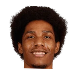

Connor Letourneau:Bob Myers on the Patrick McCaw situation:
“We chose not to match for a combination of reasons. ... We wish him well. He was great for us for two years.”

7 quotes about Patrick McCaw from 3 players, coaches and executives, newest first. Each one links to its original source.
Connor Letourneau:Bob Myers on the Patrick McCaw situation:
“We chose not to match for a combination of reasons. ... We wish him well. He was great for us for two years.”
Connor Letourneau:Steve Kerr on how he handles things with McCaw still not here:
“I just show up for practice, and whoever's there, that's who we coach. These young guys are doing a great job.”
Logan Murdock:Steve Kerr on Patrick McCaw:
“He’s a basketball player. He made some great cuts off the ball. He’s a play maker”
Josh Lewenberg:Nurse on Pat McCaw, who was available in Game 3 but didn't play:
“He's still a viable option for us if we need himand if circumstances call for it we'll use him.”
Connor Letourneau:Bob Myers on the Patrick McCaw situation:
“We chose not to match for a combination of reasons. ... We wish him well. He was great for us for two years.”
Anthony Slater:Steve Kerr on the end of Patrick McCaw’s brief Warriors career:
“The financial implications were too great, particularly at a time we need our roster flexibility.”
Connor Letourneau:Steve Kerr on how he handles things with McCaw still not here:
“I just show up for practice, and whoever's there, that's who we coach. These young guys are doing a great job.”
Myers on McCaw:
“We're going to keep talking. Hopefully we reach a resolution that works for him and us.”
Logan Murdock:Steve Kerr on Patrick McCaw:
“He’s a basketball player. He made some great cuts off the ball. He’s a play maker”
Connor Letourneau:Kerr on backup SG battle between Young and McCaw:
“It hasn’t crystalized at all for me. I plan on using both guys all year long.”